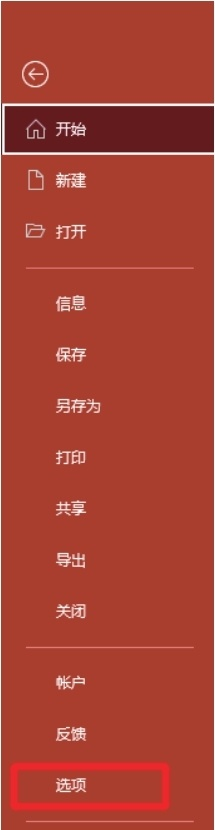
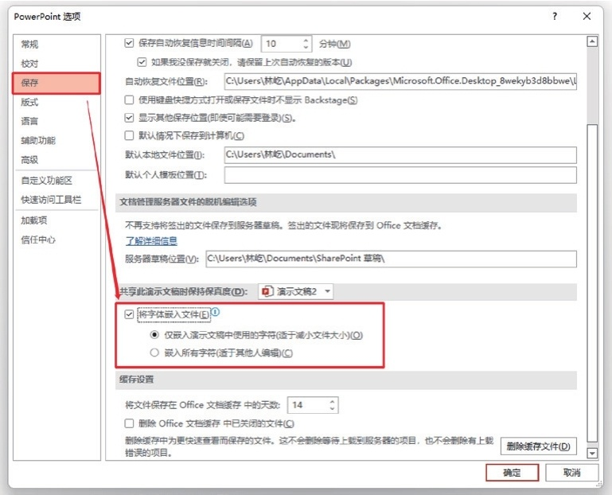

首页 > 编程笔记
PPT嵌入字体（将字体嵌入到文件中）
你做 PPT 时，可能会用到一些漂亮的特殊字体，但放到别人的计算机上播放时，那些特殊字体竟然都变成了宋体，全无你苦心追求的设计高端感。
其实，你可以将幻灯片中的特殊字体嵌入文件中，防止文件转移后的字体丢失，具体的操作步骤如下。
如果需要在其他计算机上编辑，可以选中“嵌入所有字符（适于其他人编辑）”单选按钮。设置完成后单击“确定”按钮。
其实，你可以将幻灯片中的特殊字体嵌入文件中，防止文件转移后的字体丢失，具体的操作步骤如下。
第1步
执行「文件 --> 选项」命令。

第2步
在弹出的“PowerPoint选项”对话框的“保存”选项卡中，选中“将字体嵌入文件”复选框。

第3步
为了减小文件尺寸，建议选中“仅嵌入演示文稿中使用的字符（适于减小文件大小）”单选按钮。如果需要在其他计算机上编辑，可以选中“嵌入所有字符（适于其他人编辑）”单选按钮。设置完成后单击“确定”按钮。
关注公众号「站长严长生」，在手机上阅读所有教程，随时随地都能学习。内含一款搜索神器，免费下载全网书籍和视频。

微信扫码关注公众号